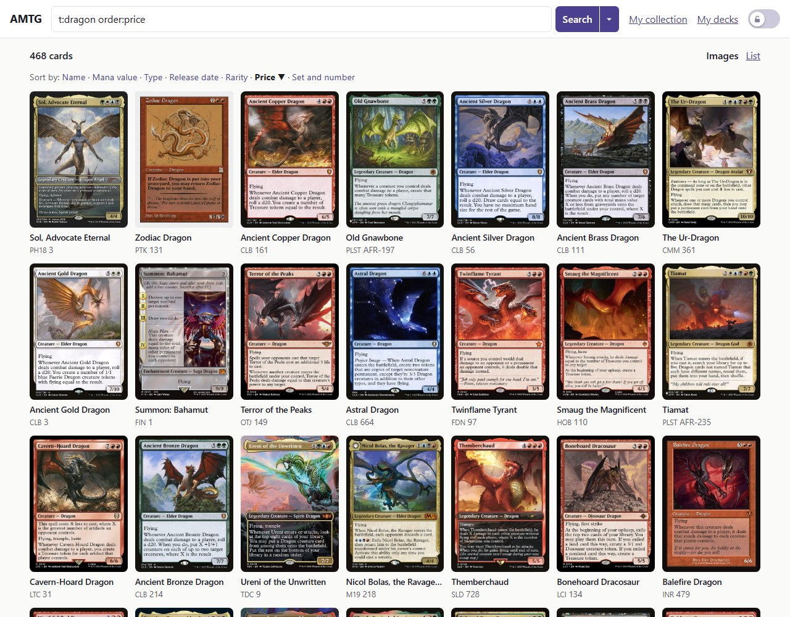
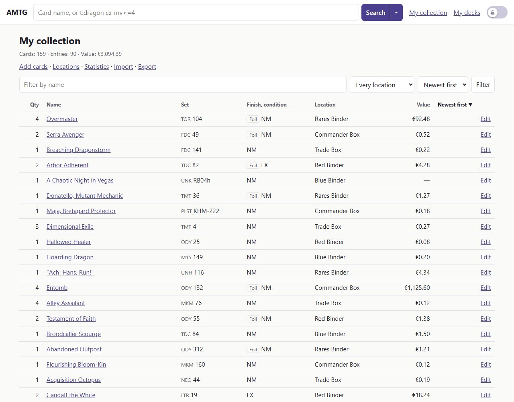
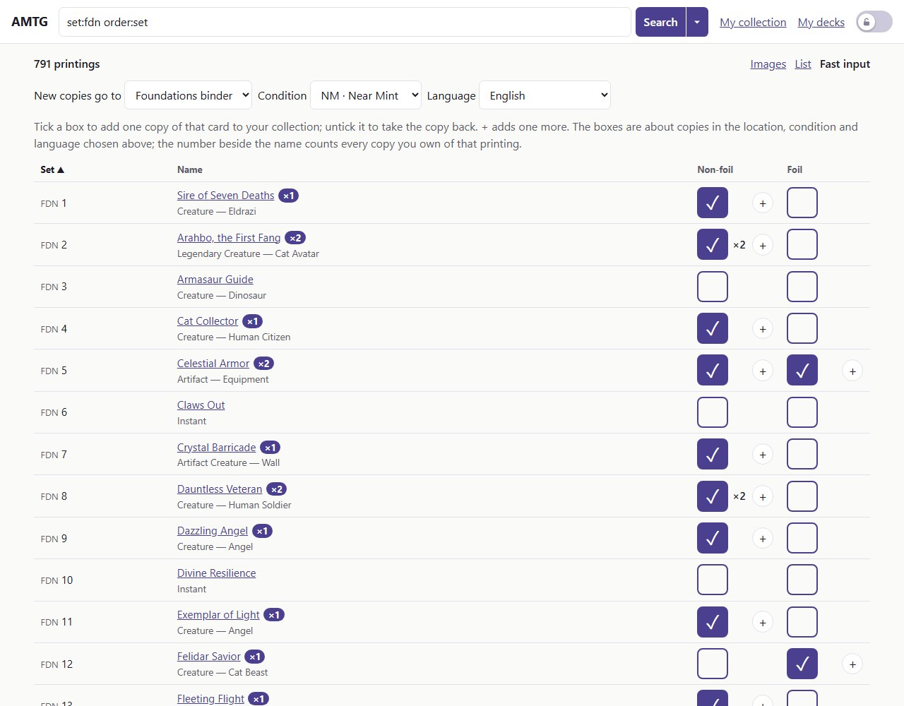
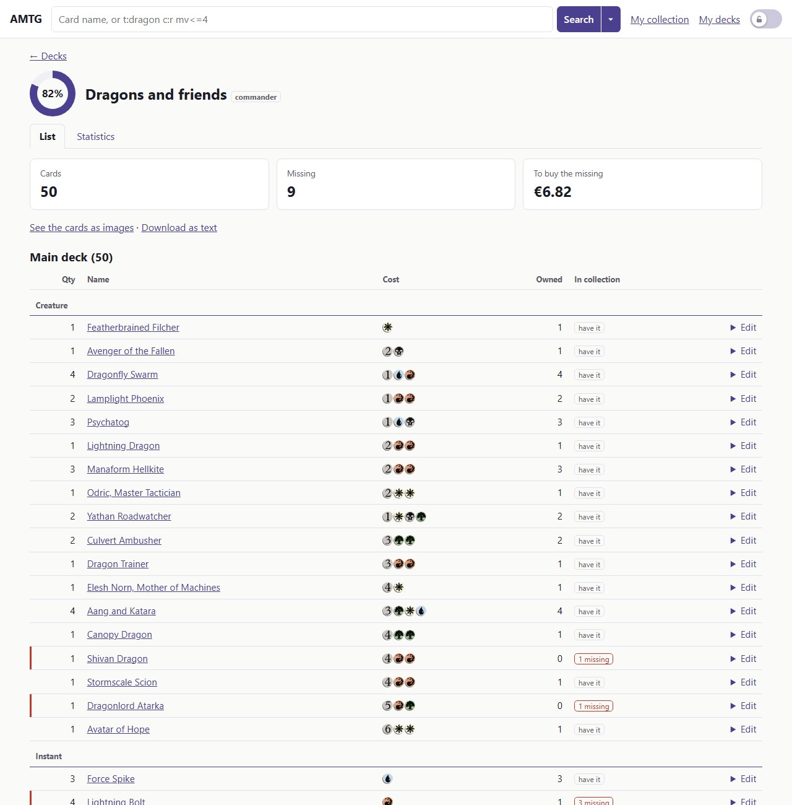
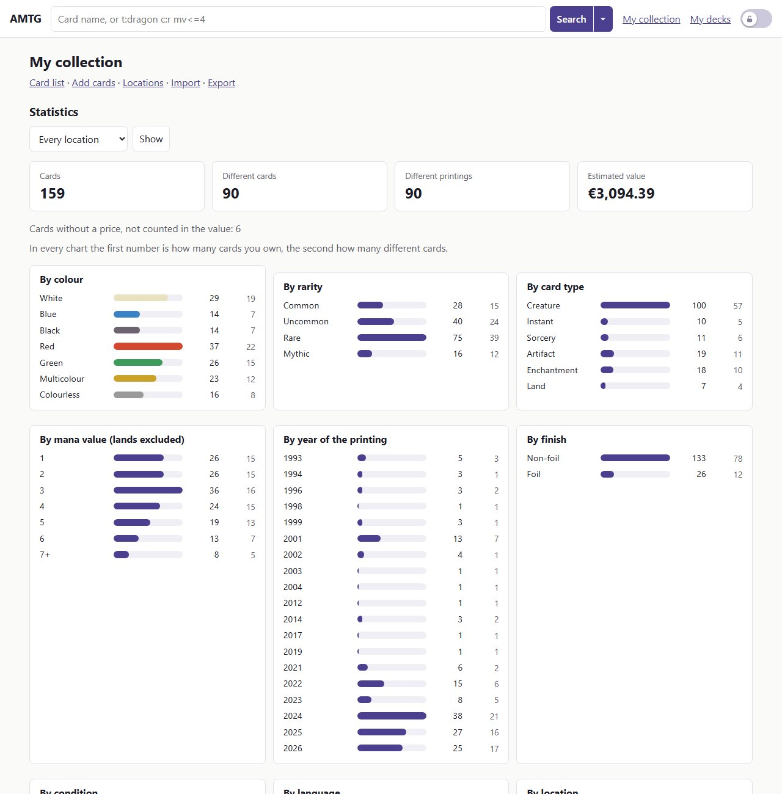

Another Magic Tracking Gizmo
Un'app web da ospitare in casa per sfogliare tutte le carte di Magic: The Gathering e tenere traccia della tua collezione e dei tuoi mazzi. Funziona su un PC Windows senza installare nient'altro, oppure in Docker. Si usa da qualsiasi browser, telefono compreso.
Scarica per Windows Docker Sorgente
Gratuita e open source. Nessun account, nessun abbonamento, nessuna telemetria.
Tutte le carte, ogni notte
Tutte le carte mai stampate, più quelle in anteprima, aggiornate ogni notte da Scryfall.
Una ricerca che parla Magic
Scrivi t:dragon c:r mv<=4 oppure usa il pannello dei filtri, che scrive la ricerca per te.
La tua collezione, e dove si trova
Quantità, finitura, condizione, lingua, e dove sta fisicamente la carta: raccoglitore, scatola, mazzo.
Un set nuovo in pochi minuti
L'inserimento rapido mette due caselle, non foil e foil, accanto a ogni carta di una ricerca: spuntane una e quella copia è nella collezione.
Mazzi che sanno cosa possiedi
Incolla una lista e vedi quanto è completa, le carte mancanti e quelle contese fra più mazzi.
Statistiche
Per colore, rarità, tipo e anno; valore; completamento dei set.
I tuoi dati restano tuoi
Un solo file SQLite, esportabile in CSV o JSON quando vuoi, con un backup ogni notte.
Un blocco di sicurezza
Sfoglia dal telefono senza modificare niente per sbaglio.
Italiano e inglese
Cambia lingua in fondo a ogni pagina.
Guardala all'opera


t:dragon order:price mostra tutti i draghi come immagini.







Riservata per costruzione
AMTG gira sul tuo computer o sul tuo server. Le uniche cose che chiede a internet sono i dati e le immagini delle carte a Scryfall e, nella pagina Amministrazione, se su GitHub c'è una versione più recente (si può disattivare). La tua collezione non esce mai dalla tua macchina.
Per cominciare
- Scarica
magic-db.exee mettilo in una cartella tutta sua. - Fai doppio clic. Il browser si apre su
http://127.0.0.1:8080. - Aspetta qualche minuto mentre il primo avvio scarica il catalogo delle carte (circa 80 MB).
Su Linux, macOS o un NAS, usa Docker. Poi leggi le guide.